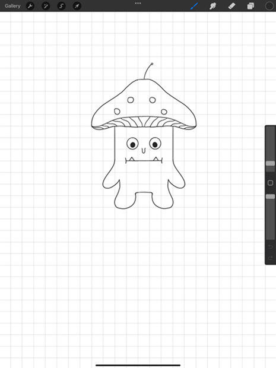
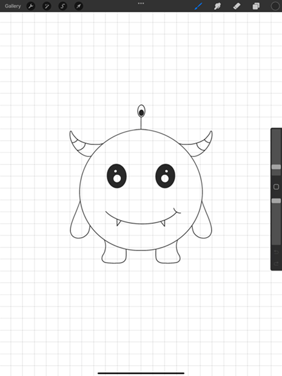
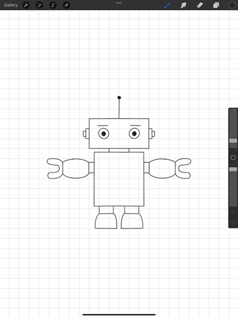
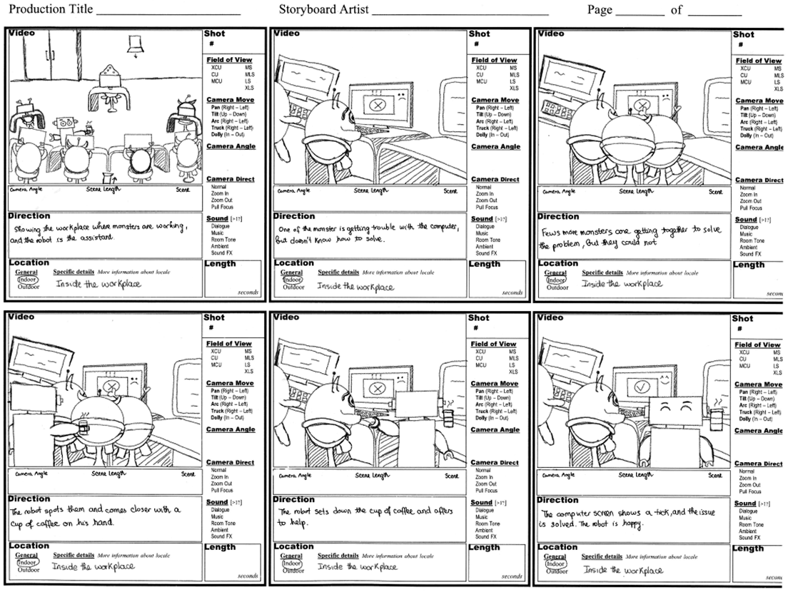
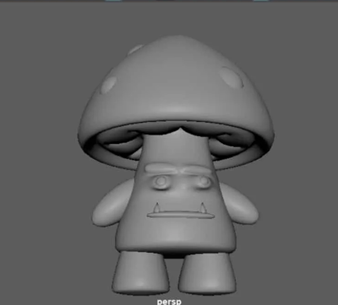
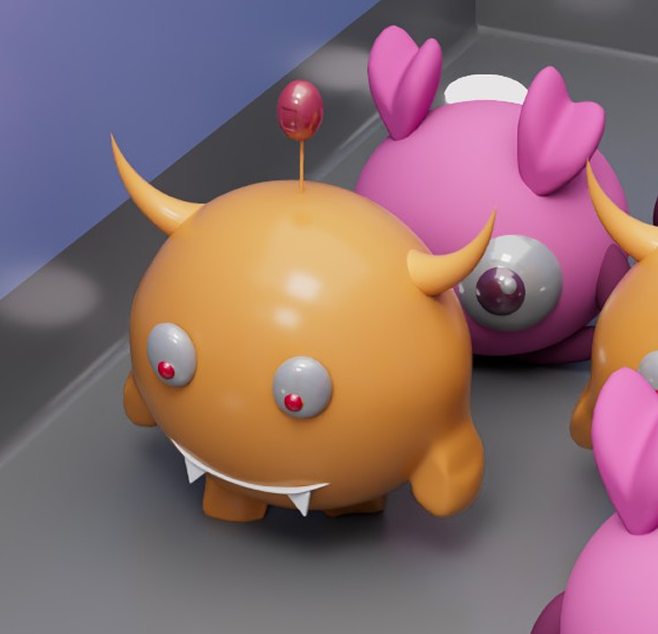
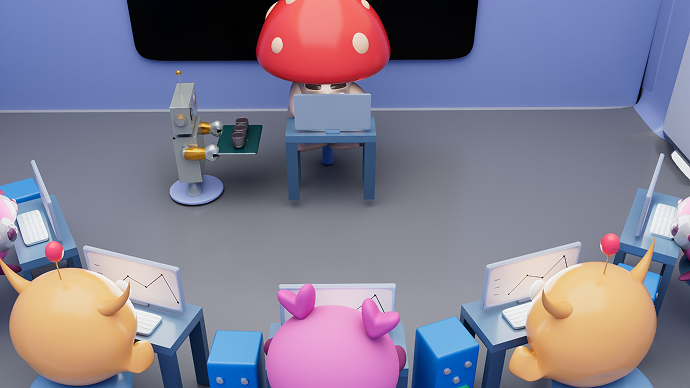
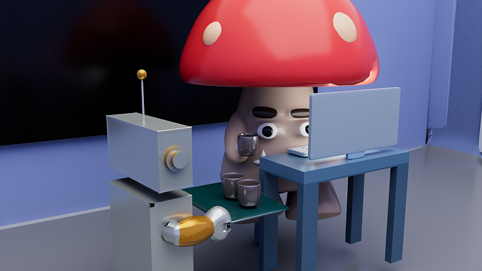
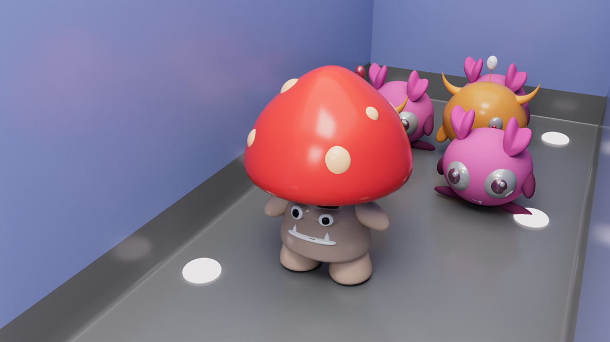

Team Project of 4
A sci-fi animation exploring the balance between technological efficiency and overdependence on automation.
Unplugged is a 3D animation story which focuses on sci-fi genre. The environment setting is based on a futuristic spaceship located in the far-away galaxy where the monsters reside. The ambiance features bright and clean surroundings, accompanied by energizing colours. The majority of the plot takes place in a laboratory.
The story is about two main characters: a robot and quirky monster-supervisor. Since there's a rapid decrease in the monster population, they are facing a staff shortage in the spaceship operations. To counteract the shortage, monsters developed robots to help them finish daily errands, complete tasks as assistants, and fix the staff shortage issue. Everything was perfect until the realization of the heavy reliance on robots came to light, prompting the need to reconsider their use to prevent potential consequences.
As the project manager, I contributed to the early ideation and development of the narrative behind Unplugged. During the initial concept phase, the team explored different sci-fi story directions before refining the idea around a futuristic spaceship laboratory where monsters rely on robots to compensate for a declining population.
My role focused on helping shape the core premise and narrative direction of the animation. Through collaborative discussions, we refined the central conflict: while robots initially solve the staff shortage problem, the monsters gradually realize their growing dependence on automation could lead to unintended consequences. This narrative direction allowed the story to balance humor and sci-fi elements while also introducing a subtle reflection on technological reliance.
During the visual development stage, I contributed to designing the characters that appear in the animation. I developed early sketches for the monster characters and designed the appearance of the robot character.
The intention was to create characters that felt playful and expressive while fitting the whimsical tone of a monster-inhabited spaceship. I explored simple shapes, exaggerated features, and clear silhouettes to ensure the characters would remain visually readable and suitable for animation.
After establishing the character designs, I created a storyboard to visualize how the animation would unfold across scenes. The storyboard helped map out the sequence of actions, character interactions, and camera framing, allowing the team to understand how the narrative and animation would progress before moving into the 3D production stage.
This step helped bridge the concept and production phases, ensuring the characters, environment, and story moments were planned clearly before building the animation in Maya.






I was responsible for modeling two of the main characters, which are the Mushroom and the Orange Big Horn Monster in Autodesk Maya. This stage involved constructing the character meshes, preparing them for animation through rigging, and applying color and texture to finalize their visual appearance.
During the modeling process, I focused on maintaining the expressive qualities of the original sketches while ensuring the models were optimized for animation. Rigging allowed the characters to move naturally during the animation sequences, while texture and color application helped reinforce the playful sci-fi aesthetic of the world.
Through this process, the characters transitioned from conceptual sketches into fully functional 3D assets ready to be integrated into the animation pipeline.
I designed and built the main environment where the majority of the story takes place: a futuristic laboratory inside the spaceship. The environment was modeled in Maya and designed to reflect a bright, clean, and technologically advanced workspace.
Colors, materials, and textures were applied to different objects and surfaces to reinforce the energetic visual style of the setting. The environment also needed to support the narrative by providing an office space where the characters could perform their tasks.
This laboratory setting became the central stage where the interaction between the robot and the monster supervisor unfolds.


Once the characters and environment were completed, I assembled the scenes in Maya by positioning the assets within each shot and setting keyframes to establish the animation timing.
This stage focused on structuring the flow of the animation so that the narrative progressed clearly from one scene to the next. By organizing the placement of characters and defining key animation points, I helped translate the storyboard into a sequence of animated scenes.
After the animation sequences were finalized, I assisted in rendering the scenes to produce the final image frames. Rendering captured the lighting, textures, and colors from the Maya scenes and converted them into the visual outputs used for the final animation.

In the final stage, I assembled the rendered frames into a complete animation using Adobe Premiere Pro. I arranged the frames according to the narrative timeline, refined scene pacing, and added sound design to enhance the storytelling.
By combining visuals and sound, the final animation became a cohesive narrative piece that communicates the story and atmosphere effectively.
This project helped me understand the full animation pipeline, from narrative ideation and concept design to 3D modeling, animation setup, and final video production.
Creating storyboards reinforced how visual planning helps translate narrative ideas into clear animated sequences before entering the production stage.
Working across character design, modeling, and environment creation highlighted the importance of maintaining a cohesive visual style throughout the animation.
Through team discussions and feedback, ideas were continuously refined across narrative, design, and production stages to keep the project aligned.